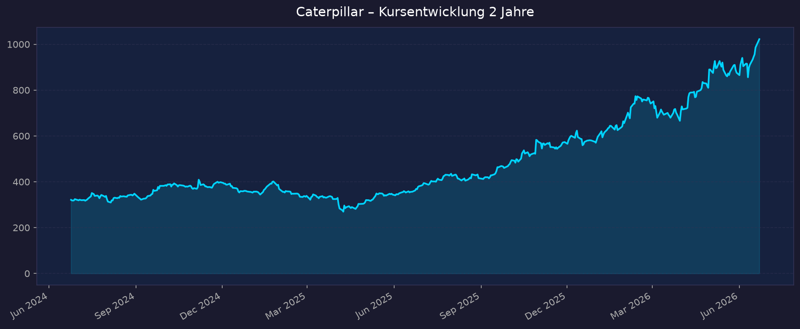
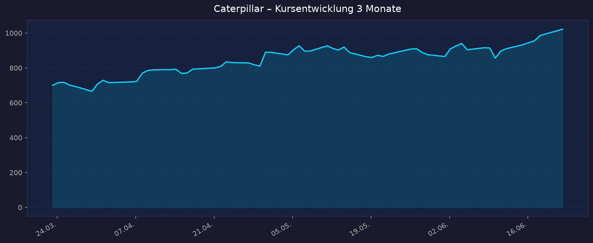

Diese Analyse gehört zur Shortlist 00_Momentum-Aktien USA-EU-Asien – 5-Jahres-Shortlist 2026-06-23.
📈 1. Kursentwicklung
Aktueller Kurs: 1.022,28 USD | Veränderung heute: +3,7 % (Vortagesschluss 985,82 USD)
Interaktiver Chart: TradingView NYSE:CAT
Chart – 2 Jahre

Chart – 3 Monate

| Zeitraum | Kurs Start | Kurs Ende | Veränderung |
|---|---|---|---|
| 2 Jahre | 321,25 USD | 1.022,28 USD | +218 % |
| 3 Monate | 700,37 USD | 1.022,28 USD | +46 % |
| YTD 2026 | ~573 USD | 1.022,28 USD | +78 % |
| 52-Wochen-Hoch | — | 1.023,29 USD (Intraday-Allzeithoch ~994,49) | — |
| 52-Wochen-Tief | — | 367,92 USD | — |
Einordnung: Die Aktie steht auf bzw. knapp unter ihrem Allzeithoch. Die These „+53 % YTD" ist sogar konservativ – per Datenstand liegt das Plus 2026 bei rund +78 %. Vom 52-Wochen-Tief (367,92 USD) hat sich der Kurs fast verdreifacht. Das passt zum MTUM-Momentum-Profil (#5 in der Shortlist).
💹 2. KGV-Entwicklung (Kurs-Gewinn-Verhältnis)
Aktuelles KGV (trailing): 51,0 | Forward-KGV: 33,9
| Zeitraum | KGV | Einordnung |
|---|---|---|
| Aktuell (trailing) | ~51 | deutlich über eigenem Schnitt |
| Forward (2026e) | ~34 | immer noch hoch für Industrials |
| Ende 2024 | ~16 | historischer Normalbereich |
| 3-Jahres-Schnitt | ~20 | — |
| 5-Jahres-Schnitt | ~20 | — |
Bewertung: Das KGV hat sich seit Ende 2024 (~16) auf über 50 mehr als verdreifacht – und das, obwohl der Gewinn je Aktie 2025 (18,81 USD bereinigt 19,06) gegenüber 2024 (22,05) sogar gefallen ist. Die Bewertungsexpansion ist also fast reine Multiple-Ausweitung („Re-Rating" zur AI-Infrastruktur-Aktie), nicht durch Gewinnwachstum gedeckt. Das deckt sich exakt mit der These „A+ Momentum / F Valuation". Selbst das Forward-KGV von ~34 liegt weit über dem historischen CAT-Niveau und über Peers wie Cummins (~24x forward).
💰 3. Sales Multiple (Kurs-Umsatz-Verhältnis / P/S)
Aktuelles P/S-Verhältnis: ~6,66
| Zeitraum | P/S Ratio | Einordnung |
|---|---|---|
| Aktuell | ~6,7 | historisch sehr hoch für CAT |
| historischer CAT-Bereich | ~2–3 | langjähriges Normalniveau |
Trend: Stark steigend. Ein P/S um 6–7 ist für einen Maschinenbauer mit ~13–14 % Nettomarge ungewöhnlich hoch – es spiegelt die Neubewertung als „Energie-/Data-Center-Infrastruktur"-Wert statt als zyklischen Equipment-Hersteller. Marktkapitalisierung: ~471 Mrd. USD bei ~67,6 Mrd. USD Jahresumsatz 2025.
📊 4. Handelsvolumen (Trading Volume)
| Zeitraum | Ø Tagesvolumen | Auffälligkeiten |
|---|---|---|
| 3-Monats-Durchschnitt | ~2,6 Mio. Aktien | — |
| 10-Tage-Durchschnitt | ~3,3 Mio. Aktien | erhöht, Momentum-/Earnings-getrieben |
| 2-Jahres-Durchschnitt | nicht verfügbar (yfinance liefert nur 3M-Schnitt) | — |
Volumentrend: Das jüngste 10-Tage-Volumen (~3,3 Mio.) liegt über dem 3-Monats-Schnitt (~2,6 Mio.), was auf gestiegenes Interesse rund um Rekordhoch und Q1-2026-Zahlen hindeutet. Klassische Volumenspitzen liegen an Earnings-Tagen (Ende Jan / Ende April / Ende Juli / Ende Okt).
🏦 5. Insider Trades (letzte 2 Jahre)
| Datum | Name | Funktion | Kauf/Verkauf | Anzahl Aktien | Wert (USD) |
|---|---|---|---|---|---|
| 01.02.2026 | Rodney M. Shurman | Group President | Verkauf | 13.423 @ 657,36 | ~8,82 Mio. |
| 10.10.2025 | Donald J. Umpleby III | Executive Chairman | Verkauf | 17.166 @ 505,29 | ~8,67 Mio. |
| diverse 2025/26 | mehrere Officer/Directors | — | überwiegend Verkäufe | — | ~99,5 Mio. (Summe jüngste Monate) |
3-Monats-Überblick: Netto-Verkäufe. Führungskräfte realisieren bei Rekordkursen Gewinne. 2-Jahres-Überblick: Klar verkaufslastig – kein nennenswertes Insider-Kaufsignal. Über breitere 100-Trade-Statistiken erscheinen zwar auch Käufe (großteils optionsbedingte Ausübungen/automatische Pläne), die wertmäßig relevanten diskretionären Trades sind aber Verkäufe. In Kombination mit der Rekordbewertung ein Warnsignal für das Einstiegs-Timing, kein akutes Krisensignal.
Quelle: SEC Edgar / OpenInsider / MarketBeat (Werte teils gerundet)
🩳 6. Short-Positionen
Aktuelle Short Quote: ~1,76–1,96 % des Streubesitzes (Float) | Short Interest ~8,1 Mio. Aktien | Short Ratio ~3,1 Tage
| Zeitraum | Short Interest | Veränderung |
|---|---|---|
| Aktuell | ~1,8–2,0 % | niedrig |
| Historie 2J | nicht detailliert verfügbar | — |
Einschätzung: Niedrig. Eine Short-Quote unter 2 % ist für eine Large-Cap unauffällig und zeigt, dass kaum aggressiv gegen die Aktie gewettet wird – trotz hoher Bewertung. Kein Short-Squeeze-Setup, aber auch kein breites Bear-Positioning.
🗞️ 7. Aktuelle Nachrichten
| Datum | Quelle | Nachricht | Relevanz |
|---|---|---|---|
| Jun 2026 | TradingView/Invezz | CAT als Profiteur des Data-Center-Ausbaus – Power & Energy liefert Generatoren/Turbinen | Hoch |
| 10.06.2026 | Unternehmensmeldung | Quartalsdividende +8 % auf 1,63 USD; Dividend-Aristokrat-Status verlängert | Hoch |
| Jun 2026 | JPMorgan | Kursziel auf Street-Hoch 1.165 USD angehoben | Hoch |
| Jun 2026 | Evercore ISI | Kursziel auf 1.103 USD | Mittel |
| Jun 2026 | Wells Fargo | Kursziel auf 1.050 USD | Mittel |
| Jun 2026 | MarketBeat/Public | Median-Kursziel ~932 USD – Kurs liegt darüber, Konsens „Buy" (28 Analysten) | Hoch |
| Mai 2026 | Morgan Stanley | Kursziel verdoppelt auf 915 USD | Mittel |
| Apr 2026 | StockTitan/Investing | Q1-2026-Zahlen deutlich über Erwartung, Aktie steigt; Backlog-Rekord ~63 Mrd. | Hoch |
| 2026 | Simply Wall St | „AI- und Services-Pivot" verändert Gewinnmix und Dividendenstory | Mittel |
| 2026 | Quiver Quant | Debatte um AI-Data-Center-Stromnachfrage als Kurstreiber | Mittel |
Sentiment: Überwiegend positiv. Treiber sind Data-Center-/Power-Nachfrage, Rekord-Backlog und Dividendenerhöhung. Gegengewicht: wachsende Stimmen, die Bewertung sei „eingepreist" und die Aktie über dem Konsens-Kursziel.
📋 8. Letzte 3 Quartalsberichte
Q1 2026 (gemeldet 30.04.2026)
| Kennzahl | Ist | Erwartung | Abweichung |
|---|---|---|---|
| Umsatz (Revenue) | 17,4 Mrd. USD (+22 % YoY) | ~16,x Mrd. | klar über Erwartung |
| EPS (bereinigt) | 5,54 USD (GAAP 5,47) | ~4,62–4,65 USD | +~0,9 USD Beat |
| Nettogewinn | 2,549 Mrd. USD (vs. 2,003 Mrd.) | — | — |
| Free Cashflow | operativer Cashflow 1,9 Mrd.; Kasse 4,1 Mrd. | — | — |
Guidance / Highlights: Backlog-Rekord ~63 Mrd. USD (+12 Mrd.). Wachstum getrieben von Construction Industries und Power & Energy (Data-Center-Strom). 5,7 Mrd. USD für Rückkäufe + Dividende eingesetzt. Kursreaktion: Aktie stieg deutlich nach dem Beat.
Q4 2025 (gemeldet Anfang 2026)
| Kennzahl | Ist | Erwartung | Abweichung |
|---|---|---|---|
| Umsatz (Revenue) | 19,1 Mrd. USD (+18 % YoY, Quartalsrekord) | — | über Erwartung |
| EPS (bereinigt) | 5,16 USD (GAAP 5,12) | — | leichter Beat |
| Nettomarge | ~13–14 % (Schätzung) | — | — |
| Free Cashflow | Teil des FY-Cashflows 11,7 Mrd. | — | — |
Guidance / Highlights: Höchster Jahresumsatz der Firmengeschichte (FY 67,6 Mrd. USD, +4 %), Einzelquartalsrekord 19,1 Mrd.; FY-EPS 18,81 (bereinigt 19,06); 10,0 Mrd. USD Kasse zum Jahresende. Jubiläumsjahr (Centennial). Kursreaktion: Earnings über Erwartung; positiv aufgenommen.
Q3 2025 (gemeldet Okt 2025)
| Kennzahl | Ist | Erwartung | Abweichung |
|---|---|---|---|
| Umsatz (Revenue) | 17,6 Mrd. USD (+10 % YoY) | — | solide |
| EPS (bereinigt) | 4,95 USD (GAAP 4,88) | — | — |
| Nettomarge | ~13–14 % (Schätzung) | — | — |
| Free Cashflow | nicht einzeln ausgewiesen | — | — |
Guidance / Highlights: Wiederbeschleunigung des Umsatzwachstums nach schwachem Q1 2025 (−10 %) und flachem Q2 2025 (−1 %). Power-/Energie-Nachfrage als Treiber. Kursreaktion: Daten nicht eindeutig verfügbar – im Gesamttrend Teil der Aufwärtsbewegung H2 2025.
Hinweis Quartalsverlauf 2025: Q1 2025 noch −10 % (14,2 Mrd.), Q2 2025 −1 % (16,6 Mrd.), dann Trendwende Q3/Q4 2025 und starke Beschleunigung in Q1 2026 (+22 %). Der Kursanstieg läuft der fundamentalen Beschleunigung teils voraus.
🌍 9. Marktkontext & Wettbewerb
Markt / Branche: Bau- und Bergbaumaschinen sowie zunehmend Energie-/Power-Systeme (Generatoren, Gasturbinen über Solar Turbines). Globaler Heavy-Construction-Equipment-Markt im hohen zweistelligen Milliarden-Bereich; Wachstumssegment E-/Zero-Emission-Equipment ~13,8 % CAGR (2,45 Mrd. 2025 → ~6 Mrd. 2032). Neuer struktureller Treiber: Stromaggregate für KI-Data-Center.
| Wettbewerber | Stärke | Schwäche |
|---|---|---|
| Komatsu (Japan) | Nr. 2 weltweit (~10,7 %), stark im Bergbau, autonome Trucks | Geringere Skalierung als CAT, Yen-Abhängigkeit |
| Deere & Co. (US) | ~5,4 % Bau, dominant in Landwirtschaft | Bau/Bergbau Nebenschauplatz |
| Cummins (US) | Antriebs-/Motorenkompetenz, Power-Gen, günstiger bewertet (~24x fwd) | Kein Komplett-Equipment-Portfolio |
| Volvo CE / Hitachi / JCB / XCMG / Sany | regional/Nische stark, China-Player aggressiv im Preis | Markenstärke/Service-Netz vs. CAT geringer |
Branchentrends:
- KI-Data-Center-Boom treibt Power & Energy (Q1 2026 ~+20 % auf ~7 Mrd.) – Neubewertung von „zyklisch" zu „Infrastruktur".
- Infrastruktur- & Bergbau-Capex (Rohstoffe für Elektrifizierung) als Rückenwind.
- Elektrifizierung/Zero-Emission-Maschinen – Wettbewerb investiert (Komatsu+Cummins Wasserstoff).
Marktposition: Klarer Weltmarktführer (~16,3 % Anteil), stärkstes Marken-, Händler- und Service-Netz, hohes margenstarkes Aftermarket-/Services-Geschäft. Rekord-Backlog ~63 Mrd. gibt seltene Mehrjahres-Visibilität.
Risiken aus dem Marktumfeld:
- Zyklik: Nachfrage hängt weiter an Infrastruktur-Spending, Bergbau-Capex und globalen Bauzyklen – können schnell drehen.
- Bewertung: Rekord-Multiples (KGV ~51, P/S ~6,7) preisen Jahre guter Nachrichten ein; Enttäuschungsrisiko hoch.
- „AI-Play"-These fragil: Sollte sich der Data-Center-Capex-Zyklus abkühlen, fällt der zentrale Re-Rating-Treiber weg.
- Margendruck & Insider-Verkäufe als zusätzliche Bärenargumente.
📝 Gesamteinschätzung
Stärken:
- Weltmarktführer (~16 %) mit unerreichtem Händler-/Service-Netz und margenstarkem Aftermarket.
- Struktureller neuer Treiber: Power & Energy für KI-Data-Center; Rekord-Backlog ~63 Mrd. USD (Mehrjahres-Visibilität).
- Operative Beschleunigung: Q1 2026 +22 % Umsatz, deutlicher EPS-Beat.
- Dividend-Aristokrat, gerade +8 % erhöht; massive Rückkäufe (5,7 Mrd. allein Q1 2026).
- Starkes Momentum (MTUM #5), Aktie auf Allzeithoch.
Risiken:
- Extreme Bewertung: KGV ~51 (Forward ~34) vs. historisch ~16–20; P/S ~6,7 vs. ~2–3 – „F Valuation".
- Re-Rating fast ohne Gewinnwachstum (EPS 2025 sogar −15 % YoY) – reine Multiple-Expansion.
- Kurs liegt über dem Analysten-Median-Kursziel (~932 USD) – wenig Sicherheitsmarge.
- Insider verkaufen netto (~99,5 Mio. USD jüngst); kein Kaufsignal von innen.
- Bleibt im Kern zyklisch; „AI-Infrastruktur"-Narrativ kann bei Capex-Abkühlung kippen.
Fazit: Caterpillar ist fundamental ein erstklassiger, operativ beschleunigender Marktführer, dessen Aktie 2026 vom KI-Data-Center-Narrativ und starkem Momentum getragen wird. Die Kehrseite ist eine historisch extreme Bewertung, die kaum durch Gewinnwachstum, sondern durch Multiple-Ausweitung entstanden ist – das Chance-Risiko-Profil ist auf diesem Niveau asymmetrisch (begrenzter Puffer nach unten bei jeder Enttäuschung). Profil „A+ Momentum / F Valuation" bestätigt sich in den Daten. Status: Watchlist – Qualität ja, Einstieg auf Allzeithoch mit Vorsicht.
🎯 Ranking-Einordnung
Bewertung nach 5 Kriterien (Punkte 1–10), gewichtet:
| Kriterium | Gewicht | Punkte (1–10) | Begründung |
|---|---|---|---|
| Momentum / Trendstärke | 25 % | 9 | +78 % YTD, Allzeithoch, MTUM #5, steigendes Volumen |
| Fundamentaldaten / Wachstum | 25 % | 7 | Q1 2026 +22 %, Rekord-Backlog 63 Mrd.; aber EPS 2025 −15 % YoY |
| Bewertung | 20 % | 2 | KGV ~51 / P/S ~6,7 – extrem teuer vs. Historie & Peers |
| Marktposition / Burggraben | 15 % | 9 | Weltmarktführer ~16 %, Service-Netz, Power-&-Energy-Pivot |
| Risiko / Stabilität | 15 % | 5 | Zyklik + Bewertungsrisiko, aber Dividend-Aristokrat & solide Bilanz |
Gewichteter Gesamt-Score: 0,25×9 + 0,25×7 + 0,20×2 + 0,15×9 + 0,15×5 = 2,25 + 1,75 + 0,40 + 1,35 + 0,75 = 6,5 / 10
Hohe Qualität und Momentum werden durch die extreme Bewertung stark gebremst. Solider Mittelfeld-Score mit klarem „Bewertungs-Malus".
Szenarien 2031 (5-Jahres-Horizont)
Ausgehend vom aktuellen Kurs 1.022 USD:
| Szenario | Annahmen | Kursziel 2031 | Potenzial |
|---|---|---|---|
| Bär | Data-Center-Capex kühlt ab, Multiple normalisiert Richtung historisch (~16–18x), zyklischer Gewinnrückgang | ~650 USD | −36 % |
| Base | Solides Mehrjahreswachstum (Power/Services), Multiple-Kompression teils durch EPS-Wachstum kompensiert | ~1.350 USD | +32 % |
| Bull | KI-Strom-Superzyklus hält, CAT bleibt „Infrastruktur-Play", EPS wächst zweistellig bei nur leichter De-Rating | ~2.000 USD | +96 % |
5-Jahres-Potenzial (Spanne): −36 % bis +96 %.
Datenquellen: Yahoo Finance / yfinance · Macrotrends · Finviz · SEC Edgar · OpenInsider · MarketBeat · StockTitan · Investing.com · Caterpillar Investor Relations · Statista · Simply Wall St · MarketScreener · TradingView Kursdaten Stand 2026-06-23 (Vortagesschluss). Kein Anlageberatung – rein informative Auswertung öffentlicher Daten.
🔗 Zugehörige Shortlist: 00_Momentum-Aktien USA-EU-Asien – 5-Jahres-Shortlist 2026-06-23